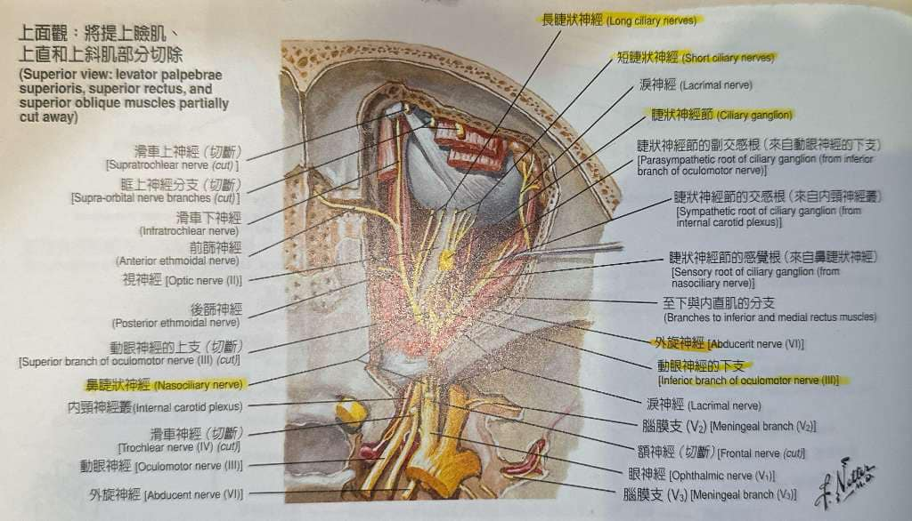
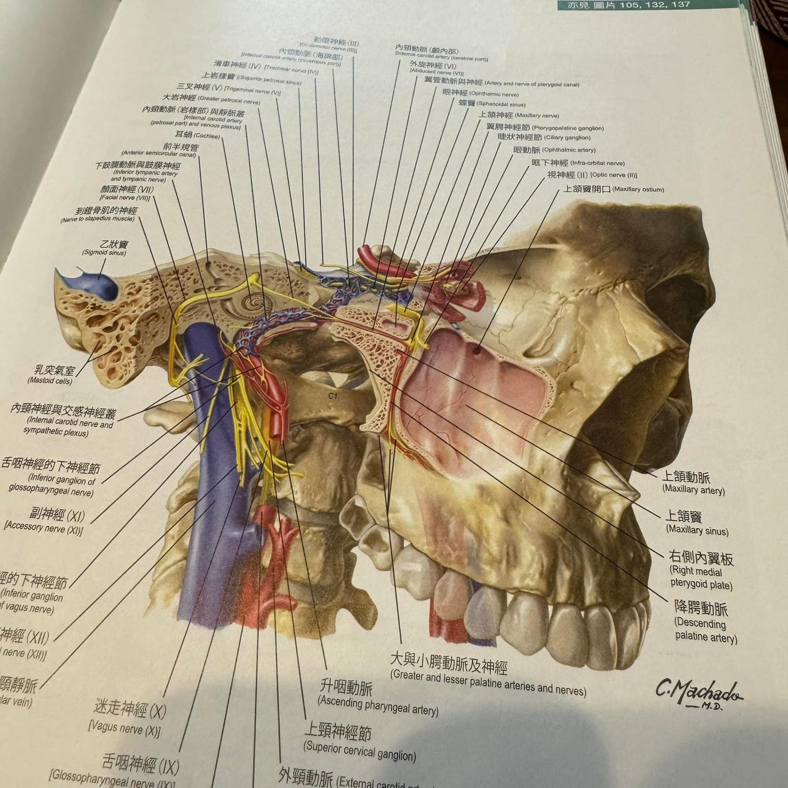

#診療紀錄
#診療紀錄
今天接手了一個非常具有挑戰性的case，33y/o年輕男性，無特殊病史，不明原因「右眼複視」，視野50公分以外都會有雙重影像，伴有頭暈😵💫 大約2週。
眼科、神內檢查都沒有發現異常，唯視力追蹤物體移動時，右眼外轉無法到底，而且右外眼眶有緊繃感，下診斷是第六對腦神經麻痺合併複視。
多管齊下找到了太初，控制眼睛的腦神經們從腦幹出發走在碟骨上方穿過視神經管與上眶裂穿出控制眼睛視野與眼球移動。
觸診顱骨排列，在枕骨顳骨與碟骨的環狀排列上發現有錯位與明顯的碟骨左旋，畢竟個案過於特殊，決定放手拼一把，花了不少時間徒手調整枕骨、顳骨與碟骨的排列，當下複視影像只改善10%，但眩暈感消失，還要繼續觀察後續幾日的變化！
希望能有好結果！
#不明原因複視
#顱骨校正
#顱初結構治療
太初中醫診所
中醫師 黃彥鈞

